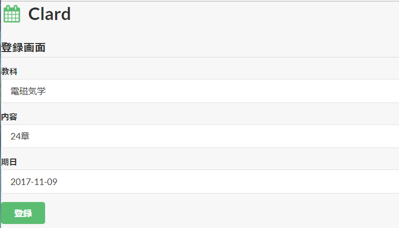

Clardは、学生間で課題、授業変更、時間割などを確認できるリマインダーサービスです。

Clardはgoogleアカウントによってユーザーを管理しますので、最初にgmailのアドレスを使ってログインしてください。
①画面下部にあるクラスを選択します。
②画面左上の新規登録ボタンをクリックします。

③登録画面に遷移するので教科名、内容、期限日を入力します。
④登録ボタンを押せば課題が追加されます。
登録された課題の左下ボタンから変更、右下ボタンから削除を行えます。
ちゃんとログが残るのでいたずらに更新しないようにしてください。

授業変更、時間割タブをクリックすれば選択しているクラスの情報が表示されます。